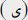

EK II
Edirne Dârü'l-Harekâtında
Vech-i Tahaşşüdü Müş'ir Levha[121]
(Harekât-ı Harbiye Lâyihasına Lâhikadır)
Edirne Kalesi'nde: |
|
| 10 Edirne | 10 |
| Birinci Sınıf Bursa | 10 |
| Birinci Sınıf İzmit | 10 |
| İkinci Sınıf Edirne | 10 |
| Toplam: | 40 |
Kırcaali Müfrezesi: |
||
| 12. Gümülcine Fırkası'nda | 36  Y | 3 |
| İkinci Sınıf Kırcaali Fırkası | 9 | |
| 9 | 3 | |
Dimetoka Fırkası: |
||
| Y 4 Nişancı | 3 | |
| Birinci Sınıf Samsun | 9 | |
| İkinci Sınıf Gümülcine | 6 | |
| 15 | 3 | |
Vize Müfrezesi: |
||
| 8. Çorlu Fırkası’ndan | Y 24 Vize | 3 |
| Birinci Sınıf Karahisar | 8 | |
| Birinci Sınıf Ereğli | 9 | |
| İkinci Babaeski Fırkası’ndan | ||
| Kırkkilise Alayı | 3 | |
| 20 | 3 | |
Birinci Kolordu: |
|
| 2’nci Kolordu: | 33 |
| 4. Tekfurdağı | 10 + Y |
| 5. Gelibolu | 10 |
| Birinci Sınıf | + |
| İzmir | 6+Bir alay Soma ve Adalarda |
| 29 | |
3. Kolordu: |
|
| 7. Fırka Kilise | 10 |
| + | |
| 8. Çorlu | 7 + 3 Y + Bir alayı Vize’dedir. |
| 9. Babaeski | 10 |
| 30 | |
| 11. Dimetoka | 10 |
| + | |
| 12. Gümülcine | 7 Bir alayı Kırcaali’de |
| İkinci Sınıf Edremid | 8 |
| İkinci Kale-i Sultaniye | 8 |
| 33 | |
Müretteb 5. Ordu: |
|
| 29. Bayburd | 10 + 9 Y |
| 30. Erzincan | 10 |
| Birinci Sınıf Trabzon | 9 |
| 32 | |
1. Redif Kolordusu: |
|
| Birinci Sınıf Ankara | 12 |
| Birinci Sınıf Kastamonu | 10 |
| Birinci Sınıf Konya | 9 |
| 31 | |
3. Redif İhtiyat Kolordusu: |
|
| Birinci Sınıf Yozgat | 9 |
| Birinci Sınıf Kayseri | 9 |
| Birinci Sınıf Antalya | 9 |
| 27 | |